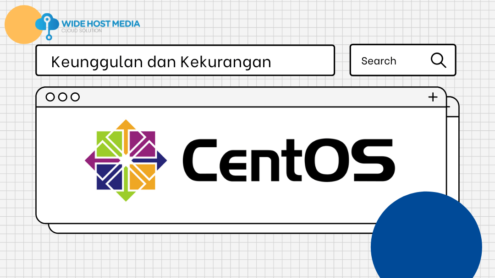

El nombre de CentOS proviene de las iniciales de Community Enterprise Operating System, una distribución Linux orientada al mercado empresarial que busca ser la alternativa libre y compatible con Red Hat Enterprise Linux, una distribución comercial que si bien está basada en Gnu/Linux y software libre incorpora una serie de servicios añadidos, soporte técnico y capacitación por los que se cobra una suscripción. En el caso de CentOS es una distribución gratuita 100% compatible a nivel binario con RHEL aunque sin incorporar los servicios por los que RHEL cobra y es lo que permite ofrecer de forma gratuita.
 • Gratuito y de código abierto: Totalmente libre para usar y modificar
• Compatibilidad con RHEL: Compatible con el mismo software y herramientas de RHEL
• Estabilidad: Ideal para servidores, con soporte a largo plazo
• CentOS Stream: Un modelo de "rolling release" que actúa como una versión intermedia entre Fedora y RHEL
• Seguridad: Incluye SELinux y actualizaciones regulares de seguridad
• Ecosistema empresarial: Soporte para herramientas como Systemd y KVM
• Transparencia: Es de código abierto, permitiendo ver, modificar y distribuir su código libremente
• Colaboración: Desarrollado por una comunidad activa, con soporte y contribuciones abiertas
• Flexibilidad: Adaptable a diversos entornos, desde servidores hasta virtualización, con compatibilidad con RHEL
• Seguridad: Incluye SELinux y recibe actualizaciones regulares de seguridad
• Costos: Totalmente gratuito, sin licencias ni suscripciones.
Propósito: CentOS tiene como objetivo proporcionar una distribución de Linux estable y de código abierto, compatible con Red Hat Enterprise Linux (RHEL), para usuarios que buscan una opción gratuita pero confiable para servidores y entornos empresariales.
Licencia: CentOS utiliza una licencia de código abierto bajo la GNU General Public License (GPL), lo que permite a los usuarios estudiar, modificar y distribuir el código libremente.
Requisitos para contribuir: Para contribuir al proyecto, los participantes deben tener conocimientos técnicos en Linux y programación. Las contribuciones suelen centrarse en informar errores, proponer mejoras o incluso contribuir código.